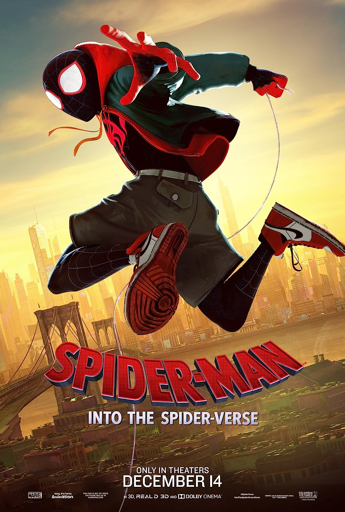

Mis Peliculas Favoritas
Spider-Man 2

Spider-Man 2 | Parker (Tobey Maguire) está en la universidad, sigue enamorado de Mary Jane Watson (Kirsten Dunst) y tiene muchos problemas: su trabajo de héroe no le deja tiempo para estudiar, ni para ganar dinero para pagarse los estudios, ni para ayudar a su tía. Además, a veces pierde sus poderes. Desesperado, decide abandonar su carrera de héroe y llevar una vida normal. Sus planes se verán interrumpidos por la aparición de un nuevo súper villano, el Dr. Otto Octavius (Alfred Molina), a quien un accidente transforma en el monstruoso criminal Octopus.
Avengers Infinty War
La última historia que se cuenta en esta película es la del mismo Thanos. Un Thanos que es bastante diferente al de los cómics. Aquí no se encuentra en una cruzada para ganar el corazón de Lady Death, aquí lo vemos con un sentimiento maltusiano e incluso un poco altruista. Thanos quiere matar a la mitad de la población del universo porque se encuentra sobrepoblado y la mejor forma de evitar la extinción de la vida es limpiar aleatoriamente a una gran población. Siento que Disney no quiso meterse a hablar de entidades cósmicas como la muerte y la jugada le salió bastante bien.
Justice League
El Snyder Cut es una de las películas más esperadas de la historia, sobre todo porque es una que parecía imposible que viera la luz. Sí, esta película no debería existir y sin embargo existe. Se impuso a un estudio que buscaba crear una película familiar, muy alejada a la visión original de Snyder; se impuso a las tragedias familiares del director y se impuso al peor villano del universo cinematográfico de DC Comics: Joss Whedon.
Intertellar

La película se desarrolla en un futuro no especificado. El mundo está sobrepoblado, y una plaga está destruyendo las cosechas de miles de granjas y creando enormes tormentas de arena. Además, el nivel de nitrógeno en la atmósfera está subiendo, por lo que la humanidad tiene sus días contados. Nuestro protagonista es un ex ingeniero y piloto de la NASA llamado Cooper (Matthew McConaughey), quien vive ahora en una granja junto con su hijo Tom, su hija Murphy (Mackenzie Foy) y su suegro Donald (John Lithgow). Después de una serie de eventos casi-paranormales que involucran una anomalía gravitacional, tanto Cooper como Murphy terminan encontrando una base secreta de la NASA, liderada por el Profesor Brand (Michael Caine) y su hija Amelia (Anne Hathaway).
A Quite Place

Es el año 2020. El panorama en la Tierra luce completamente desolador. Lo único que sabemos es que han pasado tres meses desde la llegada de unos malvados seres alienígenas, los cuales poseen un sentido auditivo muy avanzado que les permite cazar a sus víctimas con facilidad. Desconocemos el porqué y el cómo llegaron hasta aquí, pero de una cosa estamos seguros: la única regla de supervivencia consiste en guardar silencio. Cualquier ruido, por más pequeño que éste sea, es sinónimo de muerte instantánea. En medio de esta aterradora atmósfera conocemos a los Abbott, una familia que ha hecho lo posible por sobrevivir de la constante amenaza y opresión de dichas creaturas provenientes de otro planeta.
Smile

El corto Laura Hasn’t Slept de Parker Finn de 2020 explotó hábilmente la porosa división entre la realidad y el sueño. Una mujer (Caitlin Stasey) le confiesa a su terapeuta que se ha mantenido despierta por miedo al hombre sonriente que la visita en sus sueños. En Smile, ese rostro se transforma en una maldición sobrenatural literal, en parte The Ring, en parte It Follows. La Dra. Rose Cotter ( Sosie Bacon) lidia con el caso de una paciente (papel que Stasey retoma) que fue la única testigo del suicidio de su profesor. Ella afirma que ahora la atormenta un ente anónimo que “usa las caras de las personas como máscaras” y tiene “la peor sonrisa que he visto en mi vida”.
Spider-Man Into The Spiderverse
Spider-Man Into the Spider-Verse llegó a romper todos los supuestos que teníamos sobre las películas de éste género. Las películas animadas de personajes de Marvel son malas, las películas de superhéroes protagonizadas por una versión alternativa del personaje no funcionan, el Oscar a mejor animación siempre se lo lleva Disney o que Nicolas Cage sólo arruina sus papeles en las películas de superhéroes. En esta película nada de esto es verdad y creo que eso ya es un buen arranque para sentarse a ver la que quizás sea la película más interesante que nos dió alguno de los universos cinematográficos de Marvel.
Puss in Boots
Luego de perder su octava y penúltima vida, el miedo se apodera del simpático Puss in Boots, personaje que conocimos por primera vez hace casi dos décadas en la popular secuela de Shrek. La muerte parecía un concepto muy lejano para el intrépido felino, quien ahora contempla cabizbajo su inevitable destino. Sin más remedio que aprovechar al máximo la última oportunidad que le resta, el legendario héroe decide retirarse por completo de su peligroso oficio, dejando atrás su característica capa y espada para mantener un perfil bajo. No obstante, la inesperada llegada de Goldilocks y su familia de osos a la casa de reposo donde éste habita lo llevará a emprender una nueva aventura: encontrar una estrella mágica que posee la facultad de conceder un solo deseo.